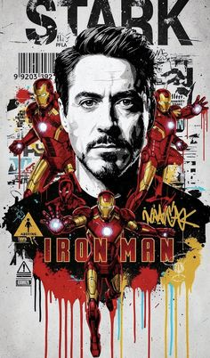

Estrutura HTML5
Uso de tags semânticas para garantir organização, acessibilidade e facilidade de manutenção.
Este portal foi desenvolvido exclusivamente para fins acadêmicos, com o objetivo de aplicar na prática conhecimentos de desenvolvimento web, estruturação semântica e design responsivo.
O universo do Homem de Ferro (Tony Stark) foi escolhido como tema central por unir tecnologia, inovação e cultura pop, permitindo explorar diferentes formatos de conteúdo, como galerias, linhas do tempo e quizzes interativos.

Mais do que reunir informações sobre o personagem da Marvel Comics, a construção deste site teve como foco praticar a organização de múltiplas páginas, hierarquia visual, identidade temática e boas práticas de codificação front-end.
Uso de tags semânticas para garantir organização, acessibilidade e facilidade de manutenção.
Paleta inspirada na armadura Mark III (vermelho, dourado e tons escuros) com CSS3.
Layout adaptado para funcionar bem tanto em computadores quanto em dispositivos móveis.
Conteúdo e imagens utilizados sem fins lucrativos, apenas para aprendizado e portfólio.